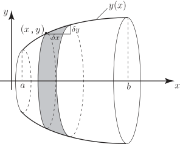

Long description: block5fig2

Alt text: A diagram illustrates a curved surface defined by a function y of x, with differential elements indicating the calculation of arc length.
This description was generated by AI and has not been verified by a human. If you spot an error, please use the feedback link below.
- The image displays a coordinate system with the x-axis horizontal and the y-axis vertical, defining a plane.
- A curve, represented by a function \(y(x)\), is plotted on the plane, starting from an x-coordinate of \(a\) and ending at an x-coordinate of \(b\).
- Over the region near \(x=a\), a differential element is shown, representing a small change in \(x\), denoted as \(\text{d}x\).
- A perpendicular differential element is shown, representing a small change in \(y\), denoted as \(\text{d}y\).
- The shaded area illustrates the relationship between \(\text{d}x\) and \(\text{d}y\) used in calculating the differential arc length element, \(\text{d}s\).
- The overall visual suggests the setup for calculating the arc length of a curve \(y(x)\) over the interval \([a, b]\) using integral calculus.